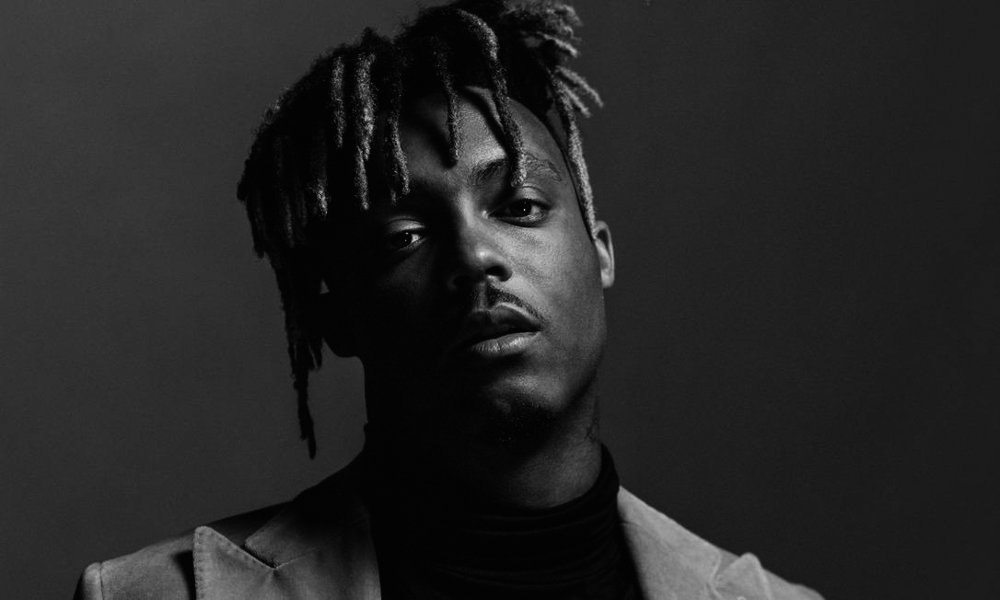

Jarad Anthony Higgins, conhecido profissionalmente como Juice WRLD (pronunciado "Juice World"),
foi um rapper, cantor, compositor e músico americano, Era mais conhecido por seus singles de sucesso
"All Girls Are the Same" e "Lucid Dreams", que o ajudaram a ganhar um contrato de gravação com a Grade
A Productions de Lil Bibby e a Interscope Records.